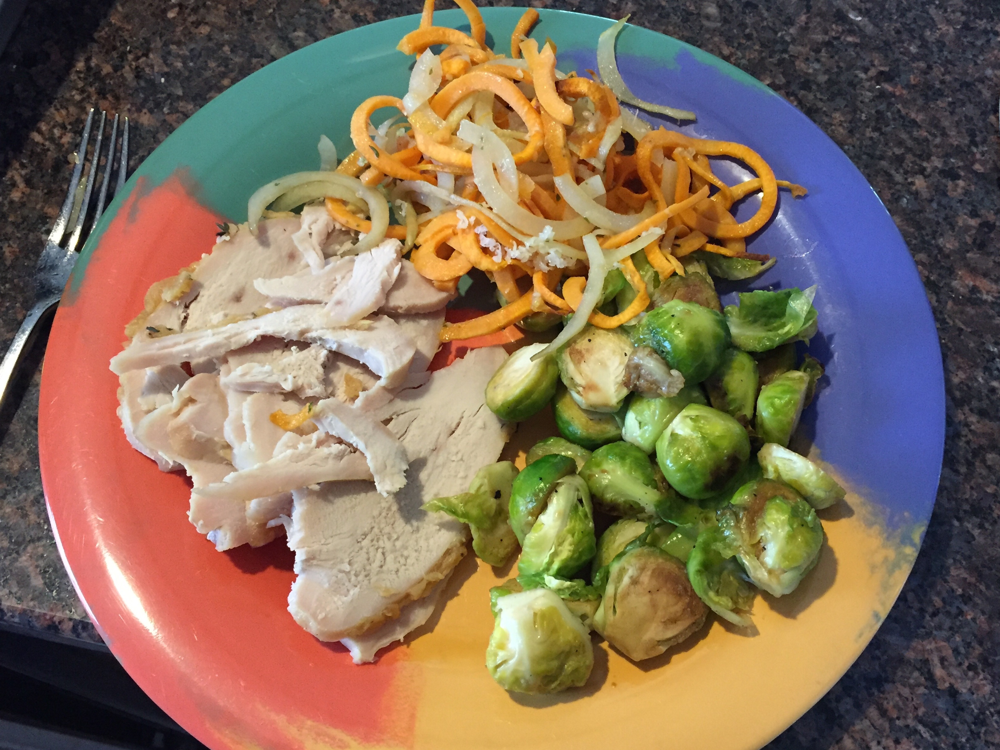
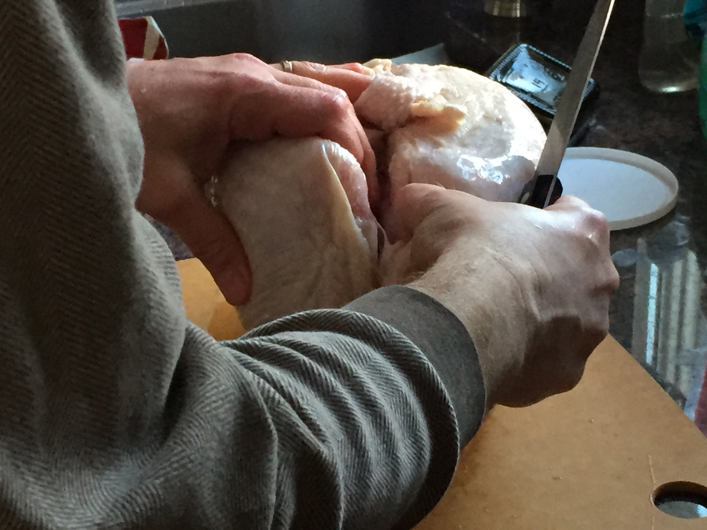
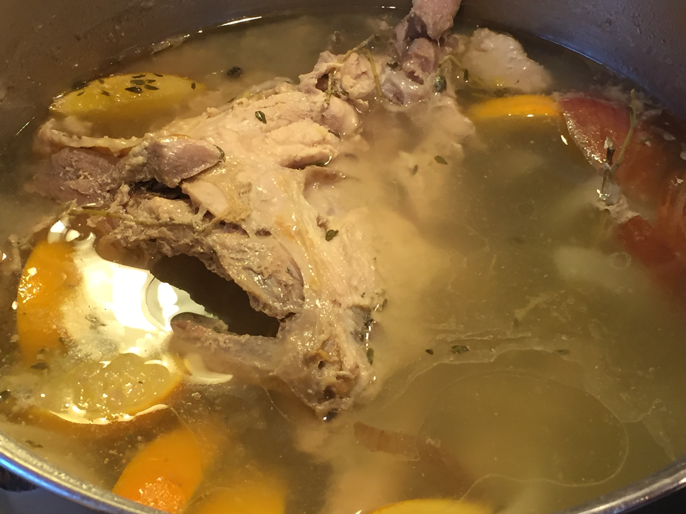
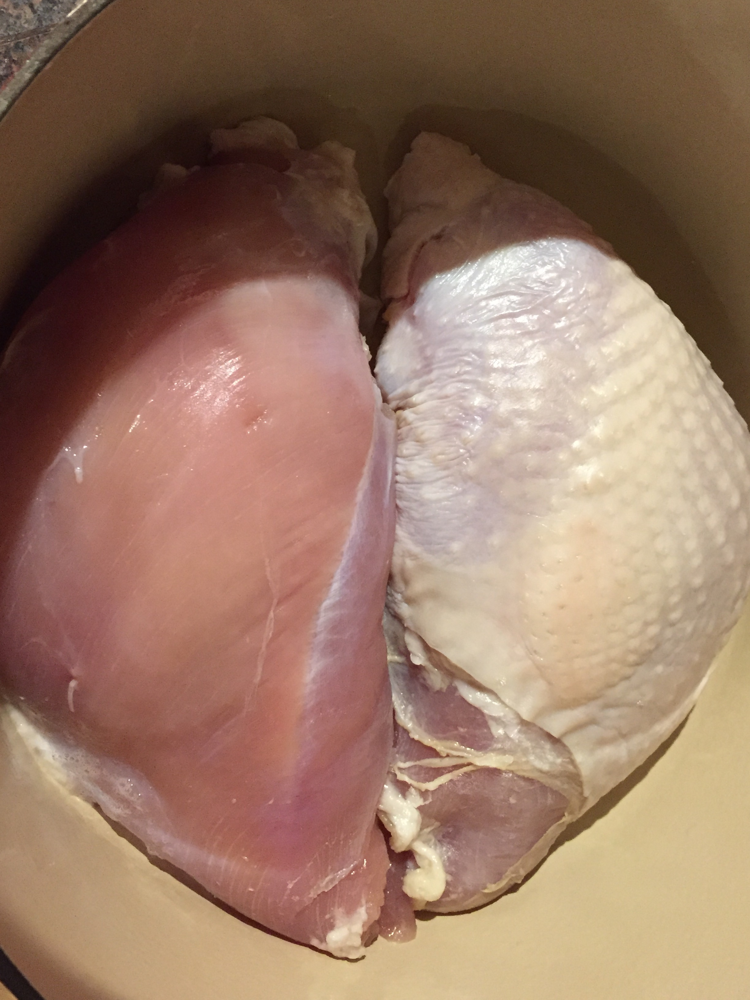
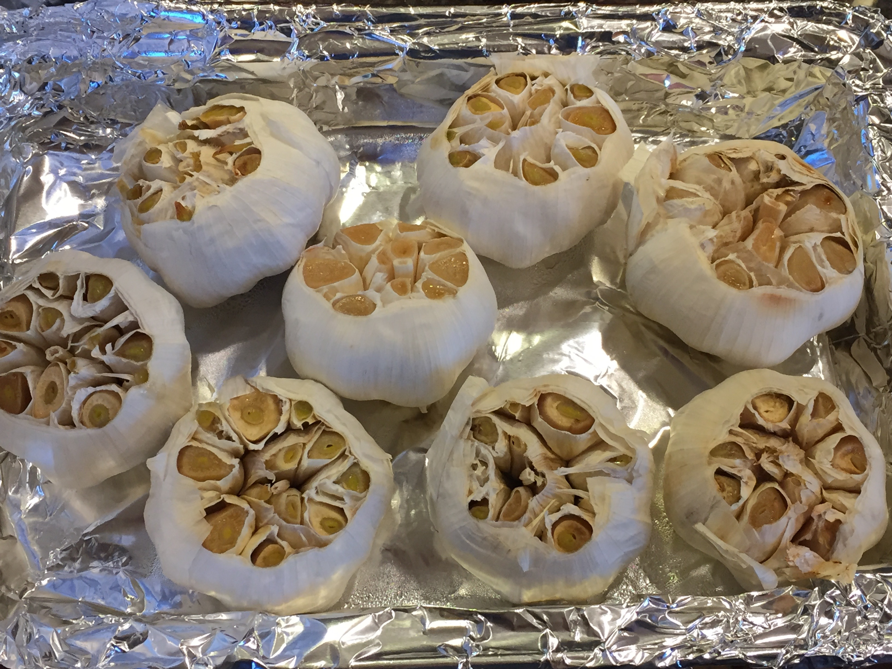
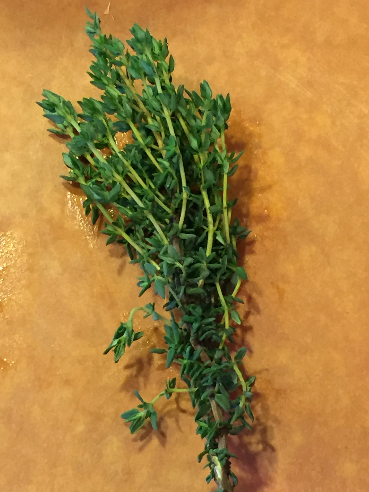
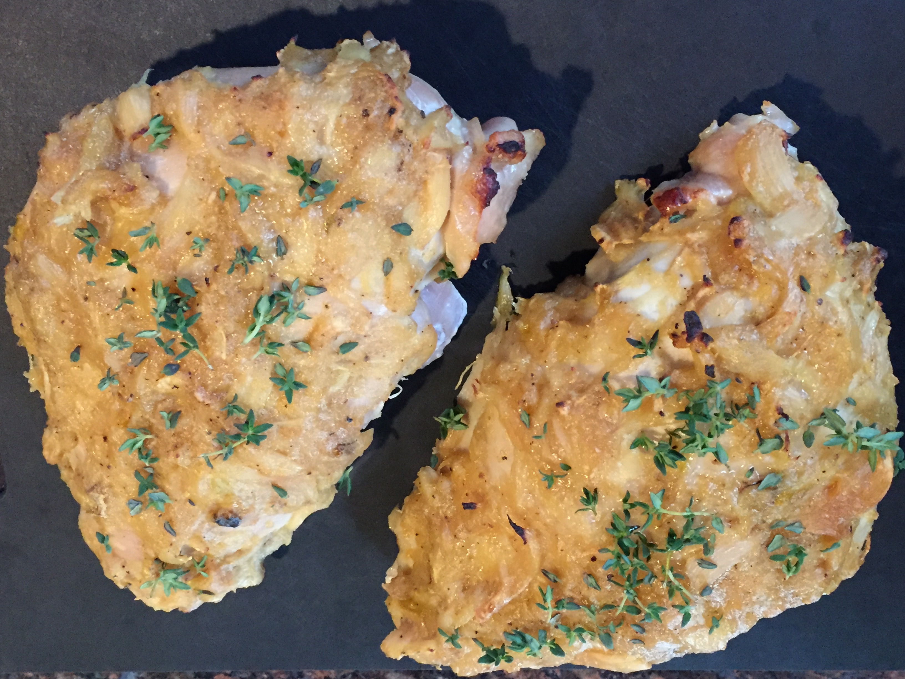
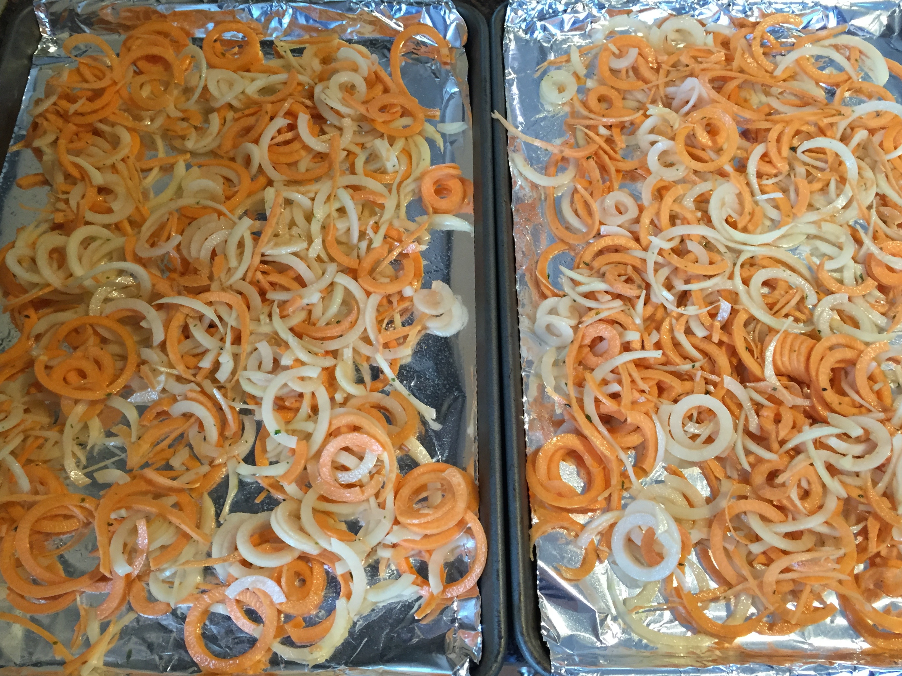
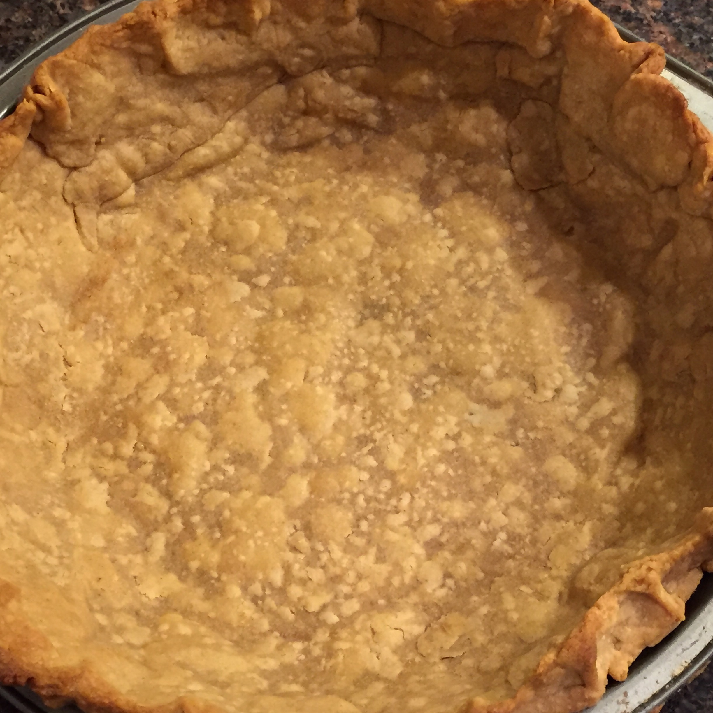
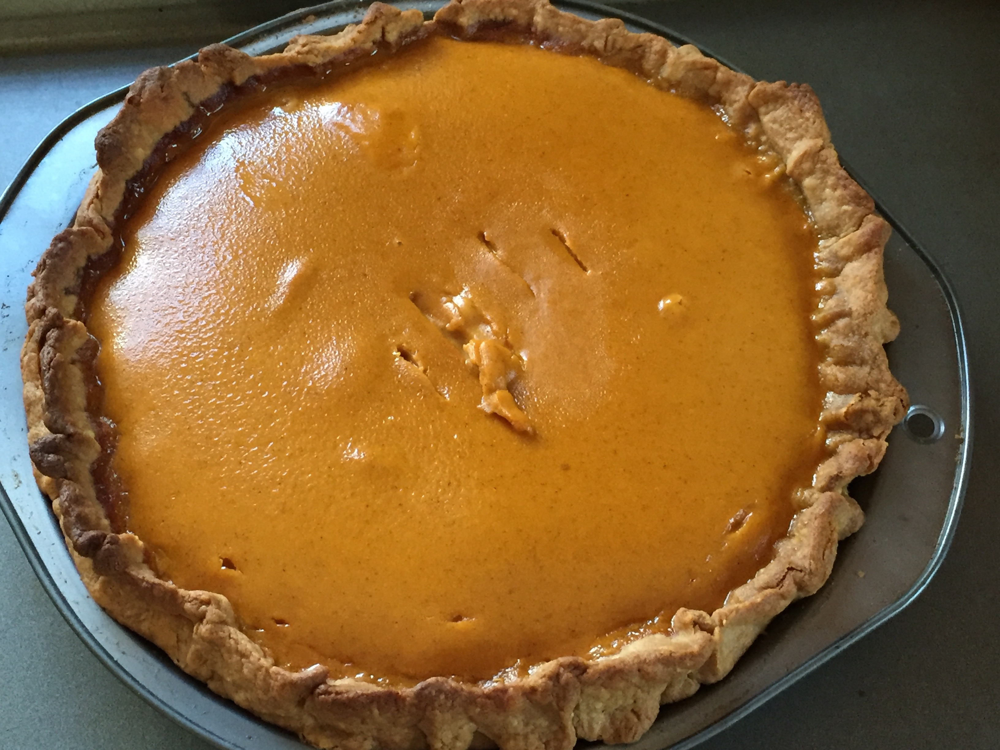

Thanksgiving11/27/2015
Nothing like starting out by reading the last chapter to ruin a thriller, eh? But, in this case, hopefully it just whet you appetite to learn more. This Thanksgiving started with a whole turkey breast.
The individual breasts were carefully carved off of the breastbone and ribs.
The carcass immediately went into the stockpot to make broth. Stay tuned for some soup action to come!
Here are the boneless breasts (one with skin and one without).
Here are the eight (yes, that's right, eight) heads of garlic to be roasted, mixed with some honey, salt and pepper for the glaze.
Who couldn't use a little extra thyme at Thanksgiving - here's some to sprinkle on top at the end.
Voila.
On the side, some roasted, spiralized white and sweet potatoes, with grated asiago on top.
It wouldn't be Thanksgiving without dessert - the pre-baked, whole-wheat pie shell...
and the finished pumpkin pie.
Awesome blog post title 3/6/2015
Praesent id metus massa, ut blandit odio. Proin quis tortor orci. Etiam at risus et justo dignissim congue. Donec congue lacinia dui, a porttitor lectus condimentum laoreet. Nunc eu ullamcorper orci. Quisque eget odio ac lectus vestibulum faucibus eget in metus. In pellentesque faucibus vestibulum. Nulla at nulla justo, eget luctus.
Awesome blog post title 3/6/2015
Praesent id metus massa, ut blandit odio. Proin quis tortor orci. Etiam at risus et justo dignissim congue. Donec congue lacinia dui, a porttitor lectus condimentum laoreet. Nunc eu ullamcorper orci. Quisque eget odio ac lectus vestibulum faucibus eget in metus. In pellentesque faucibus vestibulum. Nulla at nulla justo, eget luctus.
Awesome blog post title 3/6/2015
Praesent id metus massa, ut blandit odio. Proin quis tortor orci. Etiam at risus et justo dignissim congue. Donec congue lacinia dui, a porttitor lectus condimentum laoreet. Nunc eu ullamcorper orci. Quisque eget odio ac lectus vestibulum faucibus eget in metus. In pellentesque faucibus vestibulum. Nulla at nulla justo, eget luctus.